2. 出欠席管理票の作成
トライデント（特にWebデザイン学科）では出席率を何よりも重視しています。自分で出欠席を管理するために専用のシートを作成します。作成後は、定期的に入力をするようにしてください。
（私も定期的にチェックします）
【見本】出欠席管理票
2-1. テンプレートの準備
-
00_高木_出欠席管理票_テンプレートを開く
-
自分のGoogleアカウントでログインしていることを確認し、「ファイル」-「コピーを作成」。
-
ファイル名を自分の出席番号と苗字に変更し、「_テンプレート」の文字を削除して「OK」。（例：01_青島_出欠席管理票）
-
最初に開いた「00_高木_タイピング測定シート_テンプレート」は削除しておく。
- ■追加する機能
-
- セルの固定
- プルダウンの追加（データの入力規則）
- 範囲内のセル数のカウント（COLUMNS関数、ROWS関数）
- 出席数・遅刻早退数・欠席数のカウント（COUNTIF関数）
- 出席率に応じてセルの背景色を変える（条件付き書式）
Excelが得意な人は、授業資料を参考に進めていってください。なお、周りで困っているクラスメイトがいたら助けてあげてください。
2-2. セルの固定
- 固定したい列の任意のセルを選択する。（テンプレートではF列）
- 「表示」-「固定」-「列Fまで」を選択。
- 横にスクロールして確認。
※解除する場合は「表示」-「固定」-「列なし」を選択。
2-3. データの入力規則
- プルダウンを追加したいセルを1つ選択する。
- 右クリックメニュー『プルダウン』を選択。
-
下図のように条件を追加。（‐,◯,△,✕）
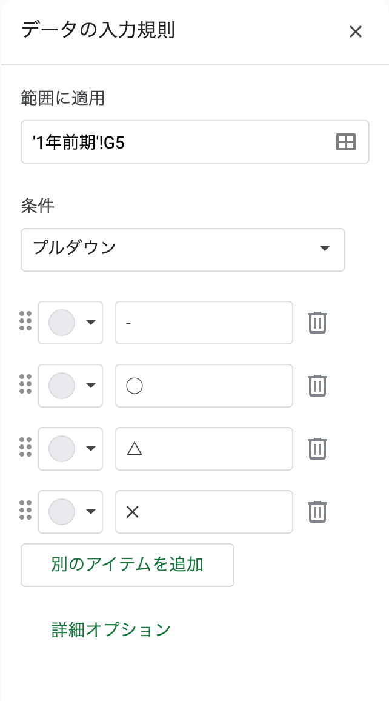
-
「詳細オプション」をクリックし、下図のようにチェックを入れ「完了」をクリック。
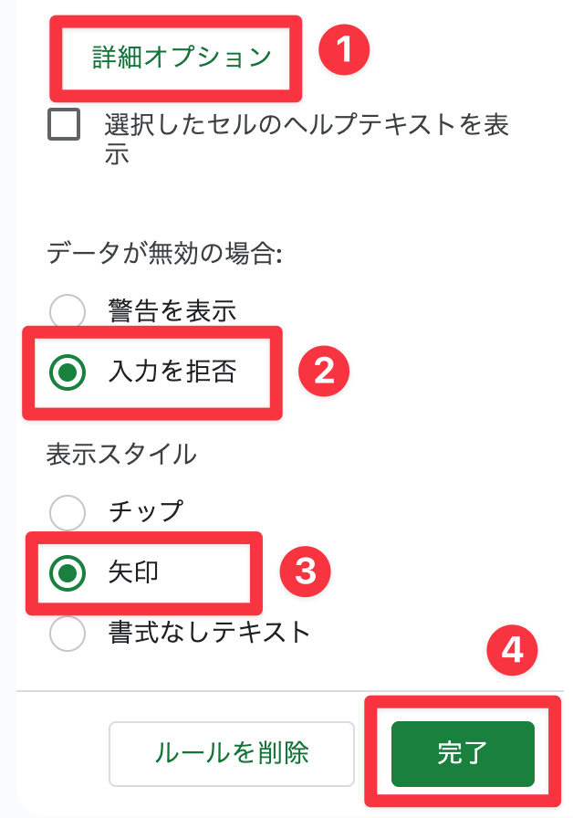
- 「command + c」でセルをコピー。
-
ペーストしたいセルをマウスドラッグで選択。
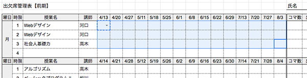
-
選択した領域内で右クリックメニュー「特殊貼り付け」-「データの入力規則のみ貼り付け」を選択。
- その他のセルにも貼り付けて完成！
※削除する場合は、右クリックメニュー「セルでの他の操作項目を表示 >
データの入力規則」を選択し「入力規則を削除」をクリック。
2-4. COLUMNS関数、ROWS関数
コマ数分のセルの数をカウントし、「コマ」のセルに数を自動的に表示させる。
- 【1コマの科目の場合】
-
- 「コマ」のセルをダブルクリックし、編集状態にする。
- 「=COLUMNS(」と入力。
-
カウントしたいセルをマウスドラッグで選択。「=COLUMNS(G5:U5」
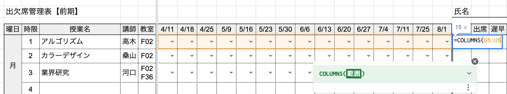
-
括弧を閉じ、「return」で編集を終了。「=COLUMNS(G5:U5)」
-
同じ1行の科目にコピペする。（右クリックメニュー「特殊貼り付け」-「数式のみ貼り付け」を選択）
- 【2コマの科目の場合】
-
-
括弧の後ろに続けて「=COLUMNS(G10:U10)*ROWS(」と入力。
-
本来はどこでもOKだが、今回は最後の2行をマウスドラッグで選択。「=COLUMNS(G10:U10)*ROWS(U10:U11」
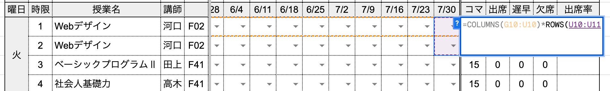
-
括弧を閉じ、「return」で編集を終了。「=COLUMNS(G5:U5)*ROWS(G5:G6)」
-
同じ2行の科目にコピペする。（右クリックメニュー「特殊貼り付け」-「数式のみ貼り付け」を選択）
2-5. COUNTIF関数
プルダウンの値をカウントし「欠席」のセルに✕の数、「遅早」のセルに△の数を自動的に表示させる。
- 【1コマの科目の場合】
-
- 「欠席」のセルをダブルクリックし、編集状態にする。
- 「=COUNTIF(」と入力。
-
カウントしたいセルをマウスドラッグで選択「=COUNTIF(G5:U5」。
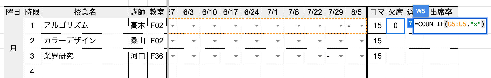
-
カンマ(,)で区切り、条件を追加する「=COUNTIF(G5:U5,"✕")」。
- 「return」で編集を終了し、反応するか確認。
-
同様に、「遅早」のセルには「=COUNTIF(G5:U5,"△")」と入力。
-
同じ1行の科目にコピペする。（右クリックメニュー「特殊貼り付け」-「数式のみ貼り付け」を選択）
- 【2コマの科目の場合】
-
-
1行拡張する。
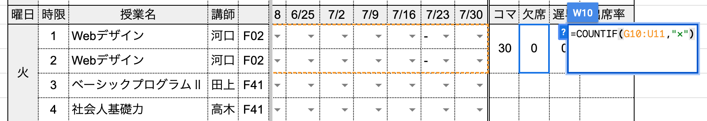
-
同じ2行の科目にコピペする。（右クリックメニュー「特殊貼り付け」-「数式のみ貼り付け」を選択）
Excel関数一覧
2-6. 条件付き書式
「出席率」を自動で計算し、80%〜90%の値になったら背景色を「黃色」、80%より小さい値になったら背景色を「赤色」に変更する。
-
「出席率」のセルを選択し、出席率を割り出す計算しきを入力「=(コマ-(欠席+(遅早*0.334)))/コマ」。
-
パーセント表示になっていない場合は下図のアイコンをクリックし、必要に応じて桁数を調整する。
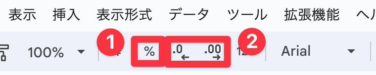
-
「出席率」のセルを選択し、右クリックメニュー『セルでの他の操作項目を表示
> 条件付き書式』を選択。
-
「セルの書式設定の条件...」を下図のように入力、「書式設定のスタイル」の「デフォルト」の文字をクリックし黄色を選択。
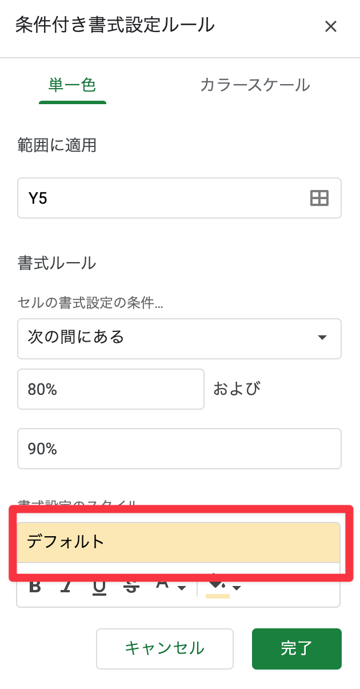
-
「+条件を追加」をクリックし、「80%より小さい」場合の条件式を追加し「完了」をクリック。
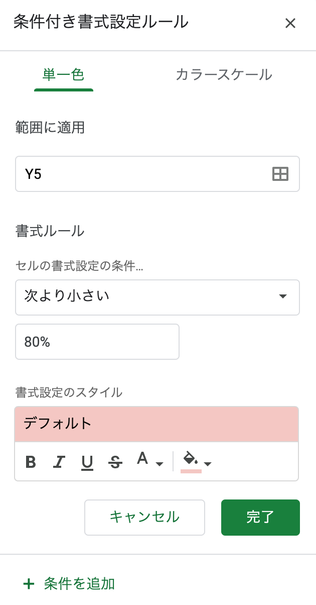
-
下図のように条件が設定されたらOK。「✕」アイコンで閉じる。
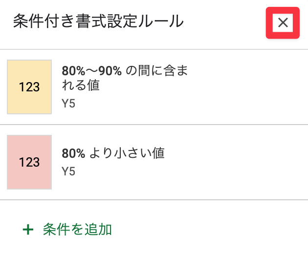
-
セルをコピーし、右クリックメニュー「特殊貼り付け」-「枠線を除くすべてを貼り付け」で他のセルにペースト。
- 右上の「氏名」を入力して完成！
※背景色や文字の大きさなど、自分で見やすいようにカスタマイズしてもOKです◎
2-7. 共有
「タイピング測定シート」と同様に「trident.takagino@gmail.com」と共有。